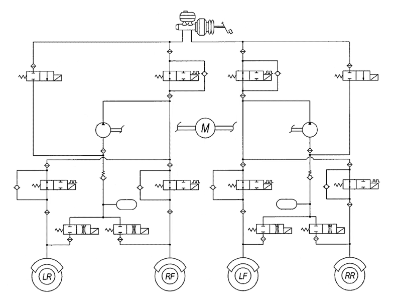

Устройство и основные компоненты
Схема системы ABS+TCS:

Traction Control System основывается на элементах антиблокировочной системы. Система предотвращения пробуксовки колес использует электронную блокировку дифференциала, а также систему управления крутящим моментом двигателя. Основные компоненты, необходимые для реализации функций антипробуксовочной системы TCS:
- Насос подачи тормозной жидкости. Этот компонент создает давление в тормозной системе автомобиля.
- Переключающий электромагнитный клапан и электромагнитный клапан высокого давления. Каждое ведущее колесо оснащено такими клапанами. Данные компоненты управляют торможением в пределах заданного контура. Оба клапана являются частью гидравлического блока ABS.
- Блок управления ABS/TCS. Осуществляет управление противопробуксовочной системой с помощью встроенного ПО.
- Блок управления двигателем. Взаимодействует с блоком управления ABS/TCS. Противопробуксовочная система подключает его к работе, если скорость машины более 80 км/ч. Система управления двигателем получает данные от датчиков и посылает управляющие сигналы исполнительным механизмам.
- Датчики частоты вращения колес. Каждое колесо машины оснащено данным датчиком. Сенсоры регистрируют скорость вращения, а после передают сигналы в блок управления ABS/TCS.